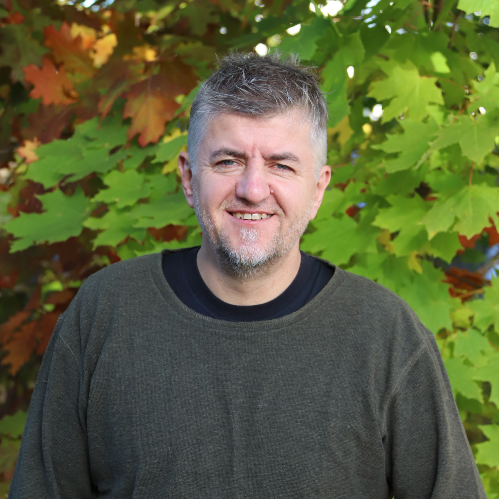
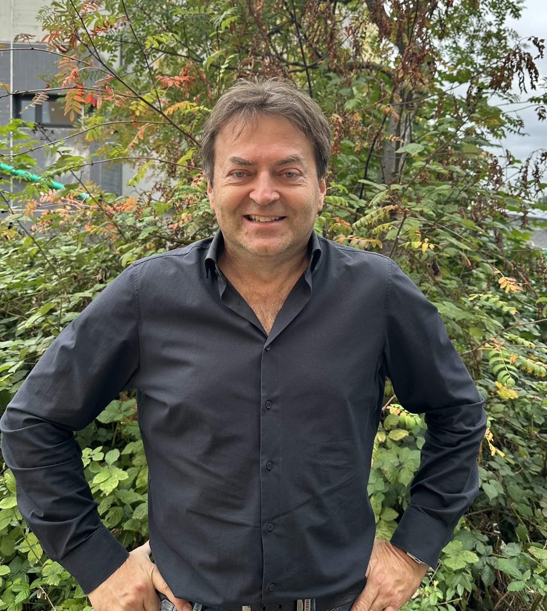
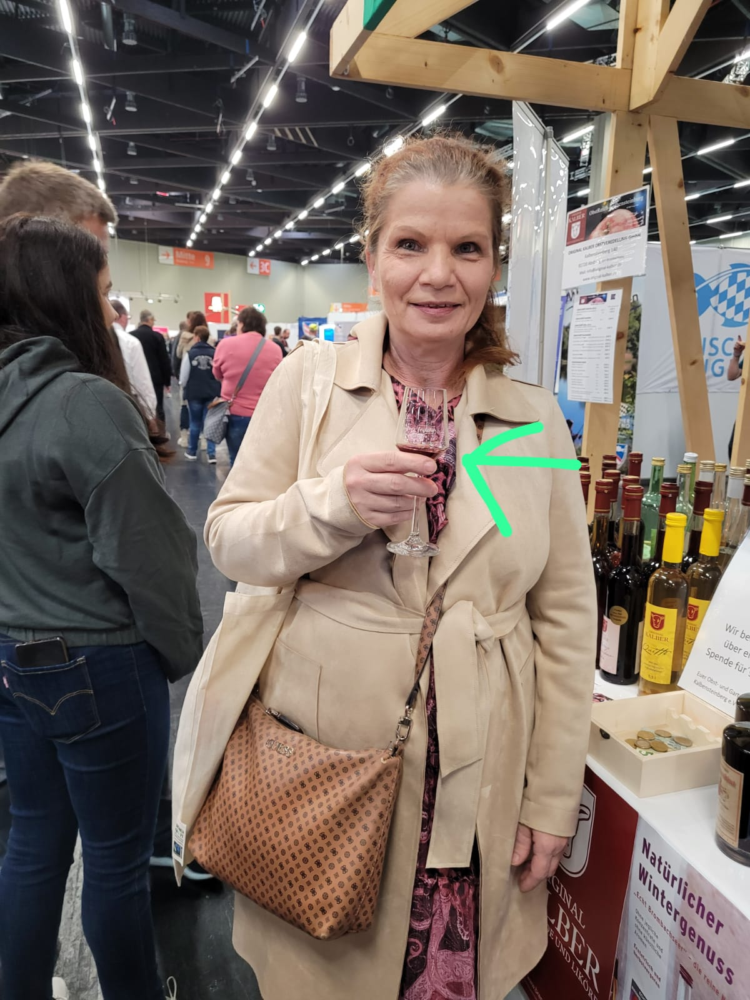
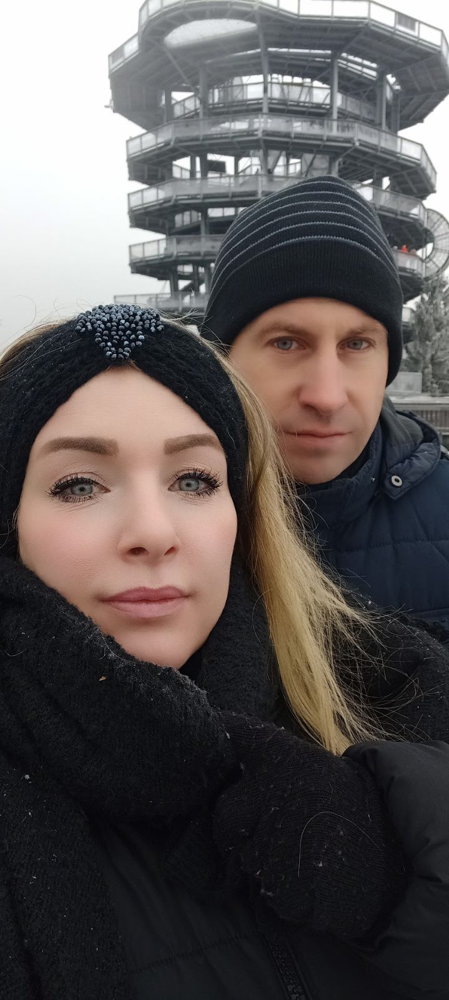
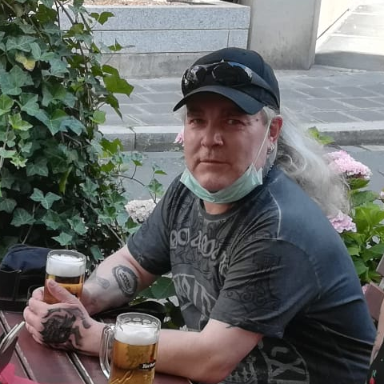
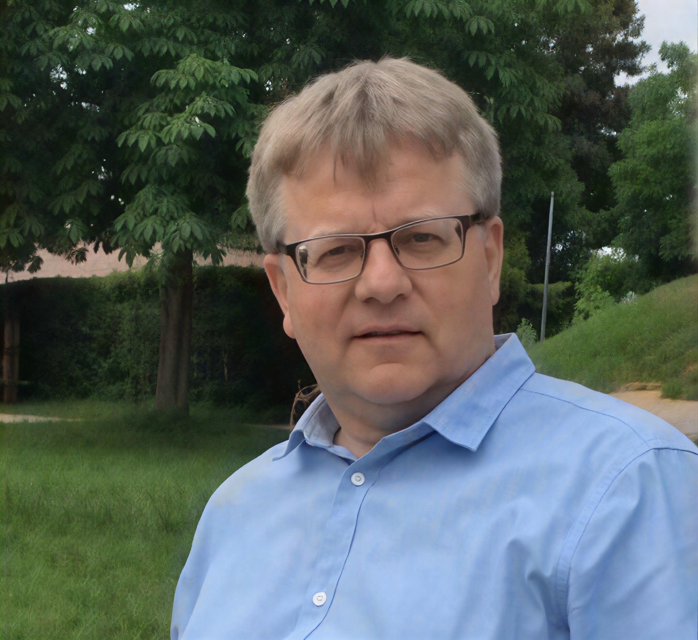
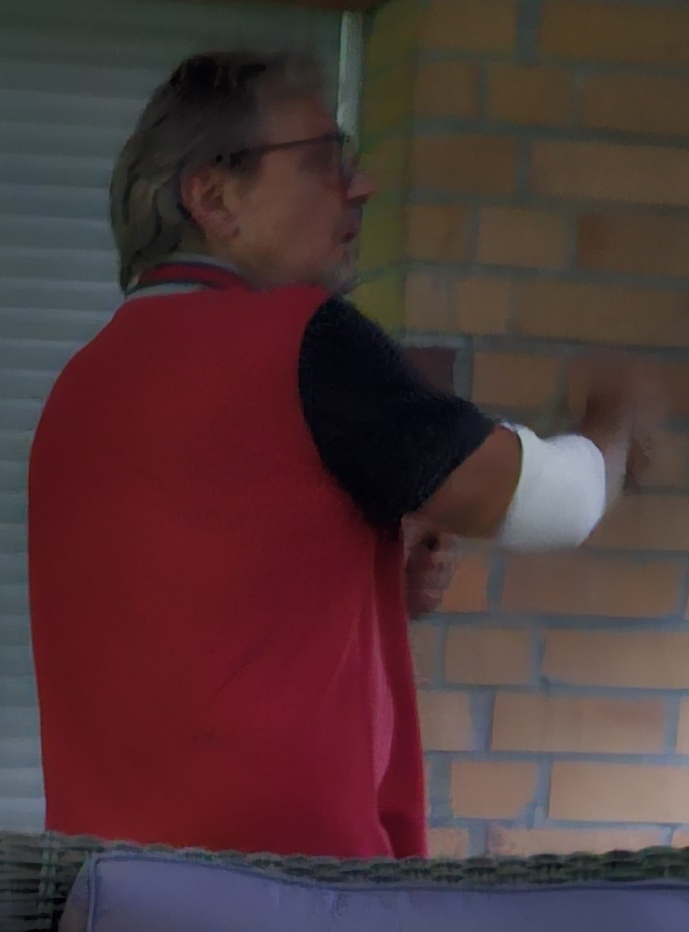
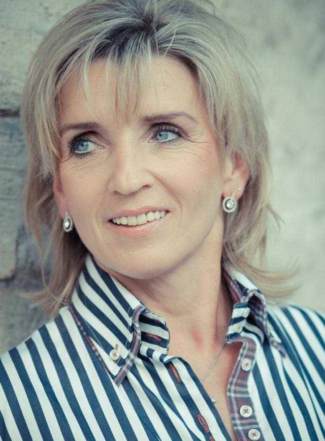
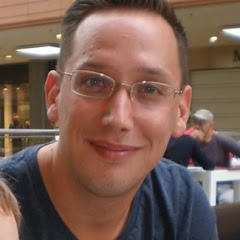
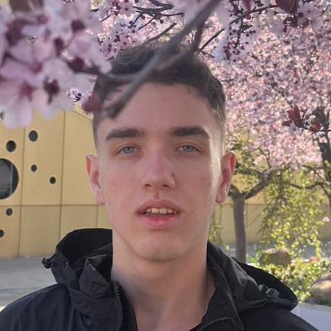

Personen
Kernprofile des Vereins
Die folgenden Texte stellen Verantwortliche, Einsatzrollen und Engagierte ausführlich vor und zeigen zusätzlich Geburtsdaten sowie die angegebenen Familienbezüge im Verein.
Vorschau persönlicher Angaben
Geburtsdaten und Familieninformationen
Diese Angaben sind bewusst sichtbar aufgenommen, weil sie für die Veröffentlichung ausdrücklich freigegeben wurden.
Schwiegervater von Karin Hoffmann
Mutter von Janine Hoffmann und Stefanie Hoffmann; Schwiegertochter von Bernd Kripp
Ehemann von Karin Hoffmann; Sohn von Bernd und Brigitte Kripp; Vater von Janine und Stefanie Hoffmann
Cousin von Karin Hoffmann
Ehemann von Silke Krüger; Vater von Sascha Krüger
Ehefrau von Mario Krüger; Mutter von Sascha Krüger
Ehemann von Janine Hoffmann; Vater von Luca Hoffmann
Ehefrau von Bernd Kripp; Mutter von Thomas Hoffmann
Tochter von Karin Hoffmann; Schwester von Janine Hoffmann
Tochter von Karin Hoffmann; Ehefrau von Sascha Krüger; Mutter von Luca Hoffmann
Sohn von Janine Hoffmann und Sascha Krüger; Enkel von Karin Hoffmann
Partnerin von Luca Hoffmann
Familienbezüge
- Bernd Kripp ist der Schwiegervater von Karin Hoffmann und der Ehemann von Brigitte Kripp.
- Brigitte Kripp ist die Ehefrau von Bernd Kripp und die Mutter von Thomas Hoffmann.
- Thomas Hoffmann ist der Ehemann von Karin Hoffmann und der Vater von Janine Hoffmann und Stefanie Hoffmann.
- Karin Hoffmann ist die Mutter von Janine Hoffmann und Stefanie Hoffmann.
- Sascha Krüger ist der Ehemann von Janine Hoffmann und der Vater von Luca Hoffmann.
- Mario Krüger und Silke Krüger sind die Eltern von Sascha Krüger.
- Janine Hoffmann ist die Mutter von Luca Hoffmann.
- Merle Wilders ist die Partnerin von Luca Hoffmann.
- Sven Schönstedt ist der Cousin von Karin Hoffmann.

Lokales Einsatzteam
Rainer Rösler, Stefanie Hoffmann und Phillip Brüderle
- Rainer Rösler Baudurchführung, langjähriger Bauherr Geboren am 06.04.1968
- Stefanie Hoffmann Pädagogik & Schulen, studierte Sozialpädagogin Geboren am 24.07.1990 Tochter von Karin Hoffmann; Schwester von Janine Hoffmann
- Phillip Brüderle Logistik, langjährige Erfahrung Warenwirtschaft Geboren am 22.02.1975
Expertenteam einzeln erklärt
Drei Rollen, ein Einsatzauftrag
Baudurchführung, langjähriger Bauherr
Rainer Rösler
Geboren am 06.04.1968
Rainer Rösler übernimmt im lokalen Einsatzteam die Baudurchführung. Seine Stärke liegt darin, aus Planungen konkrete Abläufe zu machen: Baustellen müssen vorbereitet, Materialien eingeschätzt, Arbeitsschritte sortiert und Risiken früh erkannt werden. Gerade bei Projekten wie Schulen, Sanitäranlagen oder Brunnen ist diese praktische Bauperspektive unverzichtbar, weil ein gutes Ziel nur dann hilft, wenn es vor Ort stabil und nutzbar umgesetzt wird.
Durch seine langjährige Erfahrung als Bauherr bringt er einen Blick für Machbarkeit, Reihenfolge und Qualität ein. Er kann einschätzen, welche Lösungen robust genug sind, wo einfache Konstruktionen sinnvoller sind als komplizierte Technik und wie Bauabschnitte so gedacht werden, dass sie mit lokalen Möglichkeiten zusammenpassen. Für Africa-Aid-Bayreuth e.V. steht er damit für handwerkliche Bodenhaftung und die Fähigkeit, Verantwortung direkt am Projekt zu übernehmen.
Pädagogik & Schulen, studierte Sozialpädagogin
Stefanie Hoffmann
Geboren am 24.07.1990
Tochter von Karin Hoffmann; Schwester von Janine Hoffmann
Stefanie Hoffmann bringt die pädagogische Perspektive in das Einsatzteam ein. Wenn der Verein Schulen baut oder Lernorte verbessert, geht es nicht nur um Wände, Dächer und Räume. Entscheidend ist, dass Kinder, Lehrkräfte und Gemeinden diese Orte sinnvoll nutzen können. Als studierte Sozialpädagogin achtet Stefanie Hoffmann darauf, dass Bildungsprojekte nicht als reine Bauaufgabe verstanden werden, sondern als Beitrag zu Alltag, Schutz, Entwicklung und Teilhabe.
Ihre Aufgabe ist besonders wichtig, weil Infrastruktur im Bildungsbereich immer mit Menschen verbunden ist. Ein Schulraum soll Konzentration ermöglichen, Sicherheit geben und Vertrauen schaffen. Stefanie Hoffmann kann dabei helfen, Bedürfnisse von Kindern und Familien mitzudenken und den Blick auf soziale Wirkung zu richten. Sie steht im Team für die Frage, wie ein Projekt pädagogisch Sinn ergibt und wie aus einem Gebäude ein verlässlicher Lernort werden kann.
Logistik, langjährige Erfahrung Warenwirtschaft
Phillip Brüderle
Geboren am 22.02.1975
Phillip Brüderle verantwortet im Einsatzteam die logistische Perspektive. Bei Projekten in mehreren afrikanischen Ländern entscheidet Logistik oft darüber, ob eine gute Planung tatsächlich umsetzbar wird. Material muss beschafft, transportiert, gelagert und in der richtigen Reihenfolge verfügbar sein. Seine langjährige Erfahrung in der Warenwirtschaft hilft dabei, diese Abläufe realistisch zu denken und Engpässe frühzeitig sichtbar zu machen.
Für Africa-Aid-Bayreuth e.V. ist diese Kompetenz besonders wertvoll, weil Schulen, Brunnen und Sanitäranlagen nicht nur finanzielle Mittel benötigen, sondern eine funktionierende Versorgungskette. Phillip Brüderle steht für Übersicht, Organisation und praktische Verlässlichkeit. Er hilft, die Brücke zwischen Bedarf, Material, Transport und Umsetzung zu schlagen, damit Projekte nicht an vermeidbaren organisatorischen Problemen scheitern.
 Geboren am 15.09.1969
Geboren am 15.09.1969
Geschäftsführer
Jörg Brill
Jörg Brill, geboren am 15.09.1969, steht als Geschäftsführer für den organisatorischen Mittelpunkt von Africa-Aid-Bayreuth e.V. Seine Aufgabe ist es, viele einzelne Linien zusammenzuführen: Gespräche mit Unterstützern, Abstimmungen innerhalb des Vereins, die Vorbereitung von Projekten, die Begleitung von Entscheidungen und die verständliche Darstellung dessen, was der Verein leisten möchte. Eine solche Rolle verlangt Ruhe, Verlässlichkeit und die Bereitschaft, auch dann den Überblick zu behalten, wenn ein Projekt aus vielen kleinen Arbeitsschritten besteht. Gerade bei Hilfsprojekten, die Schulen, Brunnen, öffentliche Sanitäranlagen und weitere Infrastruktur betreffen, entscheidet nicht nur die gute Idee, sondern die Fähigkeit, Verantwortung sauber zu ordnen.
Als Geschäftsführer achtet er darauf, dass aus Hilfsbereitschaft konkrete Vorhaben werden. Dazu gehört, Ziele so zu formulieren, dass sie für Spender, Ehrenamtliche und Projektpartner nachvollziehbar sind. Er verbindet die strategische Perspektive mit praktischen Fragen: Welche Maßnahme ist zuerst nötig, welche Ressourcen werden gebraucht, wer übernimmt welche Aufgabe, und wie lässt sich später erklären, was mit den Mitteln erreicht wurde. Für den Verein ist diese Übersetzungsleistung wichtig, weil Menschen nur dann dauerhaft Vertrauen fassen, wenn sie spüren, dass Engagement nicht im Ungefähren bleibt.
In seiner Funktion ist Jörg Brill auch Ansprechpartner für Themen, die nach außen wirken. Er repräsentiert den Verein, hält Kontakt zu Förderern und unterstützt dabei, das Anliegen von Africa-Aid-Bayreuth e.V. klar zu vermitteln. Dabei geht es nicht um große Worte, sondern um eine Sprache, die die Dringlichkeit in strukturschwachen Regionen Afrikas sichtbar macht und zugleich respektvoll bleibt. Schulen, Wasserstellen und Sanitäranlagen sind keine abstrakten Projekte, sondern Grundlagen für Alltag, Gesundheit und Bildung. Diese Verbindung von sachlicher Beschreibung und menschlichem Blick prägt seine Arbeit.
Innerhalb des Teams sorgt er dafür, dass unterschiedliche Kompetenzen ineinandergreifen. Bau, Pädagogik, Logistik, Recht, Datenschutz, Controlling, Technik und Spendenarbeit haben jeweils eigene Anforderungen. Die Geschäftsführung muss diese Bereiche nicht ersetzen, aber sie muss sie verstehen, koordinieren und in eine gemeinsame Richtung führen. Jörg Brill übernimmt dabei die Rolle des verbindenden Gesprächspartners, der Entscheidungen vorbereitet, offene Punkte sichtbar macht und dafür sorgt, dass die Beteiligten nicht nebeneinander, sondern miteinander arbeiten.
Für die Spendenkommunikation ist seine Aufgabe besonders sensibel. Wer spendet, gibt Vertrauen ab. Dieses Vertrauen verdient eine klare Antwort: Was soll entstehen, warum ist es notwendig, wie wird es begleitet, und welche Verantwortung trägt der Verein? Jörg Brill steht dafür, diese Fragen ernst zu nehmen. Er unterstützt eine Kultur, in der Spenden nicht nur dankbar angenommen, sondern nachvollziehbar eingesetzt werden. Damit trägt er dazu bei, dass Hilfe dauerhaft tragfähig bleibt und nicht nur als einmaliger Impuls verstanden wird.
Seine Person steht damit für Führung im praktischen Sinn: zuhören, ordnen, entscheiden, erklären und andere befähigen, ihren Teil beizutragen. Bei Africa-Aid-Bayreuth e.V. bedeutet Geschäftsführung nicht Distanz zur Arbeit vor Ort, sondern eine verlässliche Struktur hinter der Arbeit vor Ort. Genau diese Struktur hilft dem Verein, langfristig Projekte in Kongo, Angola, Mosambik, Malawi und Uganda vorzubereiten und zu begleiten.
 Geboren am 28.04.1963
Geboren am 28.04.1963
Rechtsabteilung und Datenschutz
Thilo Romer
Thilo Romer, geboren am 28.04.1963, verantwortet im Verein die rechtliche Begleitung und den Datenschutz. Damit hält er einen Bereich zusammen, der häufig erst dann sichtbar wird, wenn er fehlt. Gute Vereinsarbeit braucht klare Regeln, verlässliche Dokumentation und einen sorgsamen Umgang mit Informationen. Gerade ein Verein, der Spenden sammelt, mit persönlichen Daten arbeitet, Kontakte zu Unterstützern pflegt und Projekte in mehreren Ländern beschreibt, muss darauf achten, dass Vertrauen auch rechtlich abgesichert ist. Thilo Romer steht für diese Form von Verlässlichkeit.
Seine Aufgabe beginnt nicht erst bei Verträgen oder formalen Prüfungen. Sie beginnt bereits dort, wo Entscheidungen vorbereitet werden. Wenn Africa-Aid-Bayreuth e.V. über eine Maßnahme, eine Kooperation oder eine öffentliche Darstellung nachdenkt, ist die rechtliche Perspektive ein Schutz für alle Beteiligten. Sie hilft, Zusagen klar zu formulieren, Verantwortlichkeiten sauber zuzuordnen und Risiken frühzeitig zu erkennen. Das macht Projekte nicht schwerfälliger, sondern stabiler, weil spätere Missverständnisse vermieden werden.
Als Datenschutzbeauftragter achtet Thilo Romer darauf, dass persönliche Informationen respektvoll behandelt werden. Dazu gehören Daten von Spenderinnen und Spendern, Kontaktdaten, organisatorische Informationen und Inhalte, die im Vereinsalltag entstehen. Datenschutz ist für ihn nicht nur eine Pflicht, sondern eine Haltung. Wer Menschen um Unterstützung bittet, muss zeigen, dass er mit ihren Informationen ebenso sorgfältig umgeht wie mit den anvertrauten Spenden. Diese Sorgfalt stärkt die Glaubwürdigkeit des Vereins.
Im Zusammenspiel mit der Geschäftsführung und dem Controlling trägt seine Arbeit dazu bei, dass der Verein handlungsfähig bleibt und trotzdem nachvollziehbar arbeitet. Projekte in strukturschwachen Regionen Afrikas sind oft mit praktischen Fragen verbunden, die schnell und pragmatisch gelöst werden müssen. Gleichzeitig braucht es Regeln, damit Pragmatismus nicht zu Unklarheit wird. Thilo Romer unterstützt diese Balance: Er denkt die Anforderungen mit, ohne den Blick auf das eigentliche Ziel zu verlieren.
Für die Öffentlichkeit ist seine Rolle ebenfalls wichtig. Eine Homepage, ein Flyer oder ein Spendenaufruf wirken nach außen und prägen das Vertrauen in den Verein. Rechtliche Genauigkeit, transparente Aussagen und ein sensibler Umgang mit personenbezogenen Informationen helfen, die Arbeit seriös darzustellen. Thilo Romer trägt dazu bei, dass die Kommunikation nicht nur ansprechend, sondern auch verantwortbar ist. Das ist besonders bedeutsam, wenn persönliche Lebensläufe, Bilder und Aufgabenbereiche sichtbar werden.
Seine Person steht deshalb für die ruhige Sicherheit im Hintergrund. Er macht möglich, dass der Verein mutig handeln kann, weil wichtige Grundlagen geklärt sind. Bei Africa-Aid-Bayreuth e.V. bedeutet Recht und Datenschutz nicht Bürokratie um der Bürokratie willen, sondern Schutz der Menschen, Schutz der Organisation und Schutz des gemeinsamen Auftrags. Diese Arbeit ist ein wesentlicher Teil davon, dass Hilfe langfristig Vertrauen verdient.
 Geboren am 03.04.1943
Schwiegervater von Karin Hoffmann
Geboren am 03.04.1943
Schwiegervater von Karin Hoffmann
Ehrenvorsitzender und Hauptspender
Bernd Kripp
Bernd Kripp, geboren am 03.04.1943, ist Ehrenvorsitzender und Hauptspender des Vereins. In der Familienstruktur des Vereins ist er der Schwiegervater von Karin Hoffmann. Er hat den Aufbau von Africa-Aid-Bayreuth e.V. maßgeblich finanziert und damit eine Grundlage geschaffen, auf der andere mitarbeiten, spenden und Verantwortung übernehmen können. Seine Rolle ist deshalb mehr als eine formale Würdigung. Sie steht für den Anfangsimpuls, ohne den viele Vorhaben nicht starten würden: Jemand entscheidet sich, nicht nur Zustimmung zu geben, sondern tatsächlich Mittel, Vertrauen und persönliche Unterstützung einzubringen.
Als Ehrenvorsitzender verkörpert Bernd Kripp die Verbindung von Erfahrung und Förderung. Ein Verein braucht Menschen, die nach vorne denken, aber auch Menschen, die Stabilität geben und daran erinnern, warum die Arbeit begonnen wurde. Sein Beitrag liegt darin, dass er die Idee des Vereins ernst nimmt und sie mit einer Bereitschaft zum Handeln verbindet. Er unterstützt nicht nur einzelne Maßnahmen, sondern den Aufbau einer Struktur, die länger trägt als ein einzelnes Projekt.
Für Africa-Aid-Bayreuth e.V. ist diese Form des Engagements von besonderer Bedeutung. Infrastrukturelle Hilfe in Ländern wie Kongo, Angola, Mosambik, Malawi und Uganda entsteht nicht von heute auf morgen. Bevor ein Brunnen gebaut, eine Schule vorbereitet oder eine Sanitäranlage geplant wird, müssen Kontakte, Verwaltung, Kommunikation, Materialfragen und Verantwortlichkeiten geklärt werden. Der Aufbau eines Vereins ist also selbst ein Teil der Hilfe, weil er die Voraussetzung schafft, dass spätere Hilfe verlässlich organisiert werden kann.
Bernd Kripp steht für einen Spendenbegriff, der nicht bei der Überweisung endet. Spenden bedeutet in seinem Verständnis, eine Entwicklung möglich zu machen. Es geht um die Frage, welche Wirkung eine Unterstützung entfalten kann, wenn sie gut begleitet wird. Wer den Aufbau finanziert, ermöglicht nicht nur Sichtbares, sondern auch das Unsichtbare: Abstimmungen, Planung, rechtliche Grundlagen, technische Vorbereitung und Öffentlichkeitsarbeit. Genau diese unsichtbaren Schritte entscheiden oft darüber, ob sichtbare Ergebnisse später Bestand haben.
Seine Rolle wirkt auch nach innen. Menschen engagieren sich leichter, wenn sie spüren, dass jemand an die Sache glaubt und bereit ist, Verantwortung mitzutragen. Bernd Kripp gibt dem Verein Rückhalt. Dieser Rückhalt kann motivieren, weil er zeigt, dass das Projekt nicht nur eine lose Idee ist, sondern ein ernst gemeinter Auftrag. Besonders in einer Aufbauphase ist das wichtig: Vertrauen entsteht durch Menschen, die zuerst investieren, bevor andere sicher sein können, dass sich ihr Einsatz lohnt.
Als Ehrenvorsitzender bleibt Bernd Kripp damit eine prägende Figur für die Identität des Vereins. Er steht für Großzügigkeit, Anschubkraft und die Bereitschaft, Hilfe nicht theoretisch zu lassen. Seine Unterstützung macht deutlich, dass nachhaltige Entwicklung konkrete Menschen braucht, die den ersten Schritt gehen. Bei Africa-Aid-Bayreuth e.V. ist dieser erste Schritt verbunden mit dem Ziel, Bildung, Wasser, Hygiene und Infrastruktur dort zu stärken, wo sie für den Alltag besonders dringend gebraucht werden.

Geboren am 22.09.1981Controlling
Frank Weiß
Frank Weiß, geboren am 22.09.1981, verantwortet das Controlling des Vereins. Seine Arbeit sorgt dafür, dass Zahlen, Planungen und Entscheidungen zusammenpassen. In einem spendenfinanzierten Umfeld ist diese Aufgabe zentral, weil jede Unterstützung nachvollziehbar eingesetzt werden soll. Controlling bedeutet dabei nicht Misstrauen, sondern Orientierung. Es hilft dem Verein zu sehen, welche Mittel vorhanden sind, welche Verpflichtungen entstehen, welche Kosten realistisch sind und welche Wirkung mit den verfügbaren Ressourcen erreicht werden kann.
Bei Projekten in strukturschwachen Regionen Afrikas können kleine Planungsfehler große Folgen haben. Materialkosten, Transport, lokale Beschaffung, Bauabläufe, Verwaltung und Reserven müssen bedacht werden. Frank Weiß achtet darauf, dass Vorhaben nicht nur gut klingen, sondern auch finanziell belastbar geplant sind. Damit schützt er den Verein vor Überforderung und die Projektpartner vor enttäuschten Erwartungen. Eine gute Idee wird erst dann zu einem verantwortbaren Projekt, wenn sie auch rechnerisch nachvollziehbar ist.
Seine Rolle verbindet Genauigkeit mit Wirkung. Zahlen sind im Verein kein Selbstzweck. Sie sollen helfen, Schulen, Brunnen, öffentliche Sanitäranlagen und weitere Infrastruktur so vorzubereiten, dass Spenden dort ankommen, wo sie gebraucht werden. Frank Weiß arbeitet deshalb an einer Grundlage, auf der Entscheidungen sachlich getroffen werden können. Welche Maßnahme ist finanzierbar? Welche Folgekosten entstehen? Wo braucht es Prioritäten? Wo kann eine Spende am schnellsten Wirkung entfalten, ohne die langfristige Qualität zu vernachlässigen?
Für Spenderinnen und Spender ist Controlling ein wesentlicher Teil des Vertrauens. Menschen möchten wissen, dass ihre Unterstützung sorgfältig behandelt wird. Frank Weiß trägt dazu bei, dass der Verein Auskünfte geben, Entwicklungen dokumentieren und Mittelverwendung erklären kann. Transparenz entsteht nicht erst in einem fertigen Bericht, sondern durch saubere Erfassung von Anfang an. Diese Haltung stärkt die Glaubwürdigkeit von Africa-Aid-Bayreuth e.V. und schafft eine Grundlage für wiederkehrende Unterstützung.
Im Team arbeitet er eng mit Geschäftsführung, Spendenverantwortung und Logistik zusammen. Wenn ein Projekt geplant wird, müssen Zahlen frühzeitig mit praktischen Abläufen verbunden werden. Ein Bauvorhaben braucht andere Kostenstrukturen als eine pädagogische Ausstattung, ein Brunnen andere Risiken als eine Sanitäranlage. Frank Weiß hilft, diese Unterschiede sichtbar zu machen. Dadurch können Entscheidungen differenziert getroffen werden, statt alle Vorhaben über einen Kamm zu scheren.
Seine Person steht für die nüchterne Seite der Hilfe, die gerade deshalb so wertvoll ist. Wer helfen will, braucht Herz. Wer langfristig helfen will, braucht zusätzlich Übersicht, Kontrolle und nachvollziehbare Planung. Frank Weiß bringt diese Perspektive in den Verein ein. Bei Africa-Aid-Bayreuth e.V. bedeutet Controlling, dass Großzügigkeit eine verlässliche Richtung bekommt und aus Spenden tragfähige Ergebnisse entstehen können.

Geboren am 08.05.1978Systemadministration, Webspace und KI
Harald Oppel
Harald Oppel, geboren am 08.05.1978, verantwortet Systemadministration, Webspace-Verwaltung und KI-Themen. Damit betreut er die digitale Grundlage, auf der der Verein sichtbar, erreichbar und organisatorisch arbeitsfähig bleibt. Moderne Vereinsarbeit ist nicht mehr nur ein Schreibtisch, ein Telefon und ein Ordner. Eine Organisation, die Spenden sammelt, Menschen informiert, Bilder und Berichte veröffentlicht und intern koordiniert, braucht digitale Strukturen, die funktionieren. Harald Oppel hält diese Strukturen im Blick.
Seine Aufgabe beginnt bei der technischen Zuverlässigkeit. Eine Homepage muss erreichbar sein, Inhalte müssen gepflegt werden können, Bilder sollen korrekt laden, Kontaktwege müssen klar sein und sensible Daten brauchen Schutz. Gerade für einen jungen oder wachsenden Verein ist die digitale Präsenz ein wichtiger Vertrauenspunkt. Wer online nach Africa-Aid-Bayreuth e.V. sucht, soll schnell verstehen, wofür der Verein steht, wer Verantwortung trägt und wie eine Spende geleistet werden kann.
Als Verantwortlicher für Webspace und Systeme denkt Harald Oppel auch an die langfristige Pflege. Eine Seite ist nicht nur dann wichtig, wenn sie neu gestaltet wird. Sie muss aktualisiert, abgesichert und weiterentwickelt werden. Neue Projekte, veränderte Bankinformationen, Berichte aus Einsatzländern oder neue Bildmaterialien müssen technisch sauber integriert werden. Diese laufende Aufmerksamkeit verhindert, dass die Außendarstellung veraltet oder unübersichtlich wirkt.
Der Bereich KI ergänzt diese Arbeit um eine zukunftsorientierte Perspektive. Künstliche Intelligenz kann helfen, Texte vorzubereiten, Informationen zu strukturieren, Bilder zu organisieren, Übersetzungen anzustoßen oder interne Abläufe zu vereinfachen. Entscheidend ist jedoch, solche Werkzeuge verantwortungsvoll zu nutzen. Harald Oppel steht für einen Umgang, der Chancen erkennt, aber nicht die menschliche Verantwortung ersetzt. Gerade in einem gemeinnützigen Umfeld müssen Genauigkeit, Datenschutz und Würde der dargestellten Menschen Vorrang haben.
Im Zusammenspiel mit den anderen Verantwortlichen schafft seine Arbeit Entlastung. Wenn technische Wege funktionieren, können sich Pädagogik, Bau, Logistik, Spendenarbeit und Controlling auf ihre eigentlichen Aufgaben konzentrieren. Eine sichere und klare digitale Infrastruktur macht es leichter, Informationen zu teilen, Unterstützer zu erreichen und Projekte sichtbar zu machen. Damit ist Technik nicht Nebensache, sondern ein Werkzeug für Wirkung.
Harald Oppel steht im Verein für die Verbindung von praktischer Administration und digitaler Weiterentwicklung. Seine Rolle sorgt dafür, dass Africa-Aid-Bayreuth e.V. nicht nur vor Ort etwas bewegen möchte, sondern auch in der Kommunikation professionell auftritt. Für eine Organisation, die Vertrauen gewinnen und Menschen zum Mithelfen einladen will, ist diese technische Grundlage ein wesentlicher Bestandteil der Arbeit.

Geboren am 13.05.1966 Mutter von Janine Hoffmann und Stefanie Hoffmann; Schwiegertochter von Bernd KrippSpenden und Steuerberatung
Karin Hoffmann
Karin Hoffmann, geboren am 13.05.1966, verbindet im Verein die Spendenarbeit mit steuerlicher Fachlichkeit. Sie ist die Mutter von Janine Hoffmann und Stefanie Hoffmann; Bernd Kripp ist ihr Schwiegervater. Diese Kombination aus fachlicher Aufgabe und familiärer Verbindung macht sichtbar, dass der Verein von persönlichem Rückhalt und professioneller Verantwortung zugleich getragen wird. Wer für Schulen, Brunnen, Sanitäranlagen und Infrastruktur spendet, möchte nicht nur berührt werden, sondern auch sicher sein, dass die Spende ordnungsgemäß behandelt wird. Karin Hoffmann trägt dazu bei, dass diese Sicherheit entstehen kann.
Als Spendenbeauftragte denkt sie an die Menschen, die den Verein ermöglichen. Spenderinnen und Spender brauchen klare Informationen, eine verständliche Bankverbindung, einen eindeutigen Verwendungszweck und das Gefühl, dass ihre Unterstützung willkommen ist. Spendenarbeit ist daher mehr als das Bitten um Geld. Sie ist Beziehungspflege, Dankbarkeit, Transparenz und die Fähigkeit, Wirkung konkret zu erklären. Karin Hoffmann unterstützt eine Ansprache, die respektvoll ist und die Dringlichkeit der Projekte nicht überzeichnet.
Ihre steuerliche Perspektive gibt der Arbeit zusätzliche Stabilität. Gemeinnützigkeit, Nachweise, Dokumentation und korrekte Abläufe sind für einen Verein unverzichtbar. Gerade wenn Spenden wachsen, darf die Verwaltung nicht hinterherlaufen. Karin Hoffmann achtet darauf, dass die formalen Grundlagen mit dem Anspruch des Vereins zusammenpassen. Das schützt die Organisation und gibt Unterstützern die Gewissheit, dass ihre Hilfe nicht nur gut gemeint, sondern auch sauber verarbeitet wird.
Inhaltlich verbindet sie die Spendenarbeit mit den Zielen des Vereins. Jede Bitte um Unterstützung soll zeigen, wofür die Mittel gebraucht werden: für Lernräume, Wasserzugang, öffentliche Hygiene und Infrastruktur, die Gemeinden stärkt. Dabei ist es wichtig, nicht abstrakt zu bleiben. Ein Brunnen kann Wege verkürzen und Gesundheit schützen. Eine Schule kann Alltag, Perspektive und Gemeinschaft fördern. Eine Sanitäranlage kann Würde, Sicherheit und Prävention stärken. Solche Zusammenhänge machen Spenden greifbar.
Im Team arbeitet Karin Hoffmann eng mit Geschäftsführung und Controlling zusammen. Spenden müssen geplant, erfasst und verständlich zugeordnet werden. Wenn ein Projekt Mittel benötigt, hilft ihre Arbeit dabei, die passende Kommunikation und die korrekte Verwaltung zusammenzubringen. Diese Schnittstelle ist entscheidend: Die beste Spendenkampagne verliert an Wert, wenn sie nicht sauber dokumentiert wird, und die sauberste Verwaltung bleibt wirkungslos, wenn niemand zum Unterstützen eingeladen wird.
Karin Hoffmann steht damit für Vertrauen an einer besonders sensiblen Stelle. Sie hilft, aus Hilfsbereitschaft konkrete finanzielle Handlungskraft zu machen. Bei Africa-Aid-Bayreuth e.V. bedeutet Spendenarbeit, Menschen einzuladen, Teil eines langfristigen Aufbaus zu werden. Ihre Rolle sorgt dafür, dass diese Einladung glaubwürdig, ordentlich und nah an den Zielen des Vereins bleibt.

Geboren am 25.06.1987 Tochter von Karin Hoffmann; Ehefrau von Sascha Krüger; Mutter von Luca HoffmannRekrutierung
Janine Hoffmann
Janine Hoffmann, geboren am 25.06.1987, verantwortet bei Africa-Aid-Bayreuth e.V. die Rekrutierung. In dieser Rolle achtet sie darauf, dass Menschen nicht nur kurzfristig begeistert werden, sondern eine Aufgabe finden, die zu ihren Fähigkeiten, ihrer Zeit und ihrer Motivation passt. Gute Vereinsarbeit lebt von verlässlichen Händen, klaren Zuständigkeiten und Menschen, die verstehen, warum ihr Beitrag gebraucht wird. Janine Hoffmann verbindet diese praktische Sicht mit einem Gespür für persönliche Ansprache.
Als Tochter von Karin Hoffmann, Ehefrau von Sascha Krüger und Mutter von Luca Hoffmann steht sie zugleich für eine familiäre Linie innerhalb des Vereins. Diese Verbindung ist nicht bloß eine Randinformation, sondern zeigt, dass Engagement hier über Generationen weitergegeben wird. Janine Hoffmann bringt die Perspektive einer Person ein, die Verantwortung im eigenen Umfeld erlebt und weiterträgt. Rekrutierung bedeutet für sie deshalb mehr als Namenslisten zu füllen. Es geht darum, Menschen ernst zu nehmen und sie so einzubinden, dass aus Bereitschaft echte Mitwirkung entstehen kann.
Für die Projekte des Vereins ist diese Aufgabe zentral. Schulen, Brunnen, Sanitäranlagen und weitere Infrastruktur brauchen nicht nur Spenden, sondern Menschen, die organisieren, begleiten, informieren, prüfen und mitdenken. Janine Hoffmann kann helfen, passende Personen für konkrete Aufgaben zu gewinnen: für Aktionen in Bayreuth, für Vereinevents, für Öffentlichkeitsarbeit, für praktische Vorbereitung oder für fachliche Unterstützung. Dabei ist entscheidend, dass Engagement überschaubar bleibt und niemand mit unklaren Erwartungen allein gelassen wird.
Ihre Arbeit wirkt auch nach innen. Ein Verein wächst gesünder, wenn neue Helferinnen und Helfer nicht zufällig dazukommen, sondern freundlich aufgenommen und sinnvoll orientiert werden. Janine Hoffmann steht für diese Willkommenskultur. Sie kann erklären, welche Ziele Africa-Aid-Bayreuth e.V. verfolgt, welche Aufgaben offen sind und wo jemand mit seiner Zeit am besten helfen kann. So wird aus Interesse eine tragfähige Verbindung zum Verein.
Für Africa-Aid-Bayreuth e.V. bedeutet Rekrutierung damit Aufbauarbeit im besten Sinn. Janine Hoffmann trägt dazu bei, dass der Verein nicht nur auf wenige Schultern angewiesen bleibt, sondern seine Arbeit verbreitern kann. Ihre Rolle stärkt die menschliche Seite der Organisation: Menschen finden, ansprechen, einordnen, begleiten und ermutigen. Genau dadurch kann aus einer Idee eine wachsende Gemeinschaft werden, die langfristig für Bildung, Wasser, Hygiene und Infrastruktur einsteht.

Geboren am 24.06.1966 Ehemann von Karin Hoffmann; Sohn von Bernd Kripp; Vater von Janine und Stefanie HoffmannCatering und Nahrungsversorgung
Thomas Hoffmann
Thomas Hoffmann, geboren am 24.06.1966, ist im Verein für Catering und Nahrungsversorgung bei Vereinevents sowie vor Ort vorgesehen. Als großer Cateringunternehmer bringt er eine Kompetenz ein, die leicht unterschätzt wird, aber für jedes größere Vorhaben entscheidend ist: Menschen müssen versorgt werden, Abläufe brauchen Planung, Mengen müssen stimmen, Qualität muss zuverlässig bleiben und spontane Änderungen dürfen den Ablauf nicht aus dem Takt bringen. Diese Erfahrung macht ihn zu einer wichtigen praktischen Stütze.
Seine familiäre Rolle ist eng mit dem Verein verbunden. Thomas Hoffmann ist der Ehemann von Karin Hoffmann, der Sohn von Bernd und Brigitte Kripp und der Vater von Janine Hoffmann und Stefanie Hoffmann. Damit steht er an einer Stelle, an der persönlicher Rückhalt, Vereinsaufbau und konkrete Verantwortungsbereitschaft zusammenkommen. Für Africa-Aid-Bayreuth e.V. zeigt diese Verbindung, dass Engagement nicht nur aus formalen Ämtern entsteht, sondern auch aus Menschen, die Verantwortung füreinander und für eine gemeinsame Sache übernehmen.
Bei Vereinevents sorgt die Nahrungsversorgung dafür, dass Treffen, Spendenaktionen, Informationsabende oder Arbeitseinsätze professioneller und gastfreundlicher wirken. Wer Unterstützer gewinnen möchte, muss nicht nur Inhalte präsentieren, sondern auch Atmosphäre schaffen. Thomas Hoffmann kann dazu beitragen, Veranstaltungen so zu organisieren, dass sich Gäste willkommen fühlen, Helfende entlastet werden und der Verein einen verlässlichen Eindruck hinterlässt. Gerade solche Details entscheiden häufig darüber, ob Menschen wiederkommen und sich stärker einbringen.
Auch für Einsätze vor Ort kann seine Erfahrung bedeutsam werden. Infrastrukturprojekte brauchen Teams, die arbeiten, reisen, abstimmen und oft unter einfachen Bedingungen funktionieren müssen. Versorgung ist dann kein Nebenthema, sondern Teil der Einsatzfähigkeit. Thomas Hoffmann denkt in Abläufen, Vorräten, Hygiene, Transport und Verlässlichkeit. Diese Perspektive passt zu einem Verein, der praktische Hilfe nicht nur ankündigen, sondern gut vorbereitet umsetzen möchte.
Seine Rolle ergänzt Bau, Logistik und Organisation auf sehr direkte Weise. Während andere Verantwortliche planen, bauen, dokumentieren oder kommunizieren, sorgt Thomas Hoffmann für eine Grundlage, die Menschen arbeitsfähig hält. Bei Africa-Aid-Bayreuth e.V. steht er damit für eine Form der Hilfe, die handfest, gastlich und organisatorisch wichtig ist: gute Versorgung, klare Vorbereitung und ein Blick dafür, dass auch große Ziele an alltäglichen Bedürfnissen hängen.

Geboren am 27.03.1967 Cousin von Karin HoffmannBauplanung und Architektur
Sven Schönstedt
Sven Schönstedt, geboren am 27.03.1967, bringt als Siemens-Architekt seine Erfahrung in die Bauplanung des Vereins ein. Seine Aufgabe ist darauf ausgerichtet, Planung und Ausführung so miteinander zu verbinden, dass Projekte nicht nur gut gemeint, sondern auch baulich nachvollziehbar vorbereitet sind. Im Zusammenspiel mit Rainer Rösler, der die Baudurchführung verantwortet, entsteht damit eine wichtige Arbeitsteilung: erst denken, prüfen und planen, dann umsetzen, kontrollieren und nutzbar machen.
Als Cousin von Karin Hoffmann ist Sven Schönstedt auch persönlich mit dem Vereinsumfeld verbunden. Diese Nähe kann Vertrauen schaffen, ersetzt aber nicht die fachliche Aufgabe, die er übernimmt. Gerade bei Schulen, Sanitäranlagen, Brunnenumfeldern oder weiterer Infrastruktur braucht es einen Blick für Proportionen, Nutzung, Material, Belastbarkeit und einfache Wartung. Ein Bauwerk soll nicht nur auf dem Papier funktionieren. Es muss in einer konkreten Umgebung bestehen, von Menschen verstanden werden und mit realistischen Mitteln errichtet werden können.
Seine Erfahrung aus einem technischen und architektonischen Umfeld hilft, Ideen früh zu strukturieren. Welche Anforderungen hat ein Gebäude? Welche Wege brauchen Menschen? Wo entstehen Risiken durch Wetter, Nutzung oder Material? Wie lassen sich einfache Lösungen so planen, dass sie robust bleiben? Sven Schönstedt kann solche Fragen in die Vorbereitung einbringen und damit verhindern, dass aus Begeisterung unklare Bauvorhaben entstehen. Gute Planung spart später Zeit, Geld und Enttäuschung.
Die Zusammenarbeit mit Rainer Rösler ist dabei besonders wichtig. Rösler bringt die Perspektive der Baudurchführung und der praktischen Umsetzung ein; Sven Schönstedt ergänzt sie durch Entwurf, Ordnung und planerische Prüfung. Im besten Fall entsteht daraus ein Kreislauf, in dem Pläne nicht abgehoben bleiben und Baustellen nicht improvisiert wirken. Für Africa-Aid-Bayreuth e.V. ist diese Verbindung eine tragfähige Grundlage, wenn Projekte in Kongo, Angola, Mosambik, Malawi oder Uganda vorbereitet werden.
Sven Schönstedt steht im Verein damit für technische Sorgfalt und bauliche Voraussicht. Seine Rolle hilft, Ziele in konkrete, prüfbare Formen zu bringen. Wer Infrastruktur errichten will, braucht nicht nur den Willen zu helfen, sondern auch Pläne, die den Alltag vor Ort respektieren. Genau dort kann seine Arbeit Wirkung entfalten: zwischen Idee und Baustelle, zwischen Anspruch und Machbarkeit, zwischen Hilfe aus Bayreuth und nutzbarer Infrastruktur in den Einsatzregionen.

Geboren am 21.01.1961 Ehemann von Silke Krüger; Vater von Sascha KrügerSpedition und logistische Unterstützung
Mario Krüger
Mario Krüger, geboren am 21.01.1961, unterstützt Africa-Aid-Bayreuth e.V. mit seiner Erfahrung als Spediteur. Seine Rolle ist eng mit der Arbeit von Phillip Brüderle verbunden, der die Logistik des Vereins verantwortet. Wo Hilfsprojekte gebaut werden sollen, reicht gute Absicht allein nicht aus: Material muss geplant, bewegt, zwischengelagert und zum richtigen Zeitpunkt verfügbar sein. Mario Krüger bringt genau diese Perspektive ein und hilft, Transportfragen realistisch zu betrachten.
Als Ehemann von Silke Krüger und Vater von Sascha Krüger ist er zugleich Teil eines familiären Unterstützungsnetzwerks, das mehrere Aufgaben im Verein trägt. Diese Einbindung kann Vertrauen schaffen, weil Verantwortung nicht anonym bleibt. Seine fachliche Rolle steht dennoch im Vordergrund: Er kann abschätzen, welche Wege sinnvoll sind, wo Risiken im Transport entstehen, welche Mengen praktikabel sind und wie eine Versorgungskette stabiler wird. Gerade bei Projekten in strukturschwachen Regionen ist diese Erfahrung besonders wertvoll.
Die Zusammenarbeit mit Phillip Brüderle ergänzt zwei verwandte Kompetenzen. Brüderle denkt die Warenwirtschaft, die Reihenfolge der Beschaffung und den Überblick über benötigte Materialien. Mario Krüger bringt den Blick des Spediteurs hinzu: Transportkapazitäten, Packeinheiten, Zeitfenster, Routen, Dokumente und praktische Umsetzbarkeit. Gemeinsam können sie helfen, dass aus einer Projektliste ein Ablauf wird, der vor Ort tatsächlich funktionieren kann. So werden Engpässe früher sichtbar und Entscheidungen belastbarer.
Für Africa-Aid-Bayreuth e.V. bedeutet seine Unterstützung auch, dass Bauprojekte besser vorbereitet werden können. Schulen, Brunnen, Sanitäranlagen und weitere Infrastruktur brauchen nicht nur Finanzierung, sondern Beweglichkeit. Wer Materialien organisiert, muss wissen, was empfindlich ist, was schwer ist, was zuerst gebraucht wird und welche Reserven sinnvoll sind. Mario Krüger denkt solche Fragen aus der Praxis heraus und stärkt dadurch die Verlässlichkeit der Projektplanung.
Seine Person steht im Verein für die stille, aber entscheidende Kraft funktionierender Transporte. Hilfe kommt nur dort an, wo Wege geklärt sind. Mario Krüger trägt dazu bei, dass diese Wege nicht dem Zufall überlassen werden. Damit unterstützt er den Verein an einer Stelle, an der praktische Erfahrung, Genauigkeit und Überblick unmittelbar Wirkung entfalten können. Sein Beitrag macht die Projektarbeit belastbarer, weil logistische Fragen früh geprüft und nicht erst im Einsatz gelöst werden müssen.

Geboren am 06.10.1963 Ehefrau von Mario Krüger; Mutter von Sascha KrügerDirektion und organisatorische Unterstützung
Silke Krüger
Silke Krüger, geboren am 06.10.1963, unterstützt bei Africa-Aid-Bayreuth e.V. die Geschäftsführung um Jörg Brill. Als geschäftsführende Direktorin bei Koetter bringt sie Leitungserfahrung, organisatorische Klarheit und ein Gefühl für verlässliche Abläufe ein. Eine gemeinnützige Organisation braucht Menschen, die nicht nur Ziele formulieren, sondern Strukturen so mitdenken, dass Entscheidungen vorbereitet, Aufgaben verteilt und Ergebnisse nachgehalten werden können.
Als Ehefrau von Mario Krüger und Mutter von Sascha Krüger ist sie zudem Teil einer Familie, die mehrere Aufgabenbereiche im Verein stärkt. Diese persönliche Nähe verbindet sich mit beruflicher Erfahrung. Silke Krüger kann helfen, den Blick auf Prioritäten zu schärfen: Was muss entschieden werden? Welche Information fehlt? Wer muss eingebunden werden? Wo braucht es Verbindlichkeit? Solche Fragen sind im Vereinsalltag wichtig, weil gute Projekte sonst leicht an unklaren Zuständigkeiten hängen bleiben.
Ihre Unterstützung für Herrn Brill liegt besonders in der organisatorischen Begleitung. Die Geschäftsführung hält viele Fäden zusammen: Kontakte, Spendenkommunikation, Teamabstimmung, Projektvorbereitung und Außenwirkung. Silke Krüger kann diese Arbeit entlasten, indem sie Strukturen ordnet und Abläufe mit einem professionellen Blick betrachtet. Das hilft dem Verein, auch dann handlungsfähig zu bleiben, wenn mehrere Vorhaben gleichzeitig Aufmerksamkeit verlangen.
Für Projekte in Kongo, Angola, Mosambik, Malawi, Uganda und weiteren Einsatzkontexten ist diese Fähigkeit bedeutsam. Internationale Infrastrukturarbeit braucht Planungstreue und klare Kommunikation. Eine Schule, ein Brunnen oder eine Sanitäranlage entsteht nicht allein aus Begeisterung, sondern aus verlässlicher Vorbereitung. Silke Krüger steht dafür, dass Ziele in überschaubare Schritte übersetzt werden und Verantwortung nicht im Ungefähren bleibt.
Ihre Rolle ergänzt damit die inhaltlichen und praktischen Kompetenzen des Vereins. Während Bau, Logistik, Pädagogik, Spendenarbeit und Technik jeweils eigene Aufgaben haben, stärkt Silke Krüger die Führungsebene. Bei Africa-Aid-Bayreuth e.V. bedeutet ihre Unterstützung, dass Organisation als Teil der Wirkung verstanden wird. Denn nur ein gut geführter Verein kann dauerhaft Vertrauen gewinnen und aus Hilfsbereitschaft belastbare Projekte machen. Ihre Erfahrung hilft außerdem, Gespräche, Termine und Verantwortlichkeiten so vorzubereiten, dass Herr Brill Entscheidungen auf einer klareren Grundlage treffen kann.

Geboren am 07.04.1986 Ehemann von Janine Hoffmann; Vater von Luca HoffmannPR-Abteilung und Außenwirkung
Sascha Krüger
Sascha Krüger, geboren am 07.04.1986, verantwortet die PR-Abteilung von Africa-Aid-Bayreuth e.V. Als Fitnesstrainer bringt er Erfahrung darin mit, Menschen zu motivieren, Ziele verständlich zu machen und Fortschritte sichtbar zu halten. Genau diese Fähigkeiten sind auch in der Öffentlichkeitsarbeit wichtig. Ein Verein, der Spenden sammeln und Vertrauen aufbauen möchte, muss erklären können, wofür er steht, was erreicht wurde und warum Unterstützung weiterhin gebraucht wird.
Als Ehemann von Janine Hoffmann und Vater von Luca Hoffmann ist Sascha Krüger familiär eng mit dem Verein verbunden. Diese Verbindung stärkt die persönliche Glaubwürdigkeit seines Engagements. Öffentlichkeitsarbeit ist jedoch nicht nur ein familiärer Beitrag, sondern eine eigenständige Aufgabe: Sie übersetzt Vereinsarbeit in klare Botschaften, Bilder, Berichte und Anlässe. Menschen sollen verstehen, warum Schulen, Brunnen, Sanitäranlagen und weitere Infrastruktur konkrete Lebensbedingungen verbessern können.
Seine Rolle in der PR-Abteilung ist besonders wichtig, weil Hilfe oft erklärt werden muss, bevor sie unterstützt wird. Spenderinnen und Spender brauchen Vertrauen, Orientierung und einen Eindruck davon, wie ihre Mittel eingesetzt werden. Sascha Krüger kann dazu beitragen, Projekte so darzustellen, dass sie weder übertrieben noch trocken wirken. Gute PR zeigt die Dringlichkeit, wahrt Würde und macht nachvollziehbar, welche Wirkung ein Beitrag entfalten kann.
Als Fitnesstrainer kennt er den Zusammenhang von Ziel, Ausdauer und sichtbarer Entwicklung. Diese Haltung passt gut zur Vereinsarbeit. Infrastruktur entsteht selten in einem einzigen Schritt. Sie braucht Vorbereitung, Training im übertragenen Sinn, Kommunikation und wiederholte Motivation. Sascha Krüger kann helfen, Unterstützer nicht nur einmal anzusprechen, sondern langfristig mitzunehmen. Dabei zählt eine Sprache, die klar, aktiv und nah an den Menschen bleibt.
Für Africa-Aid-Bayreuth e.V. steht er damit für die öffentliche Stimme des Vereins. Seine Arbeit kann Veranstaltungen begleiten, Erfolgsgeschichten sichtbar machen, neue Unterstützer ansprechen und die Verbindung zwischen Bayreuth und den Einsatzregionen stärken. PR ist in diesem Verständnis kein Schmuck, sondern ein Werkzeug für Vertrauen. Sascha Krüger trägt dazu bei, dass die Arbeit gesehen, verstanden und weitergetragen wird. Besonders wichtig ist dabei ein Auftritt, der professionell wirkt und trotzdem nahbar bleibt. So kann der Verein neue Aufmerksamkeit gewinnen, ohne seinen sachlichen und respektvollen Ton zu verlieren.
 Geboren am 02.11.1943
Ehefrau von Bernd Kripp; Mutter von Thomas Hoffmann
Geboren am 02.11.1943
Ehefrau von Bernd Kripp; Mutter von Thomas Hoffmann
Immobilienpflege in Bayreuth
Brigitte Kripp
Brigitte Kripp, geboren am 02.11.1943, ist für die Immobilienpflege in Bayreuth verantwortlich. Als Ehefrau von Bernd Kripp und Mutter von Thomas Hoffmann ist sie eng mit den familiären Grundlagen des Vereins verbunden. Ihre Aufgabe betrifft einen Bereich, der im Hintergrund liegt, aber für eine Organisation sehr wichtig sein kann: Räume, Ordnung, Pflege und Verlässlichkeit am Standort Bayreuth. Ein Verein braucht nicht nur Projekte in der Ferne, sondern auch eine gut betreute Basis vor Ort.
Als Rentnerin bringt Brigitte Kripp Zeit, Erfahrung und ein Gefühl für Beständigkeit ein. Immobilienpflege bedeutet mehr als gelegentlich nach dem Rechten zu sehen. Es geht um Aufmerksamkeit für Zustand, Nutzbarkeit, Sauberkeit, kleine Mängel und die Frage, ob Räume für Vereinsarbeit, Besprechungen, Lagerung oder Vorbereitung geeignet bleiben. Solche Dinge erscheinen oft selbstverständlich, bis sie fehlen. Ihre Rolle hilft, dass der organisatorische Ausgangspunkt des Vereins gepflegt und verlässlich bleibt.
Für Africa-Aid-Bayreuth e.V. ist Bayreuth der Ort, an dem vieles zusammenkommt: Spendenkommunikation, Planung, Verwaltung, Vorbereitung von Veranstaltungen und Abstimmung innerhalb des Teams. Wenn die Immobilien und Räume vor Ort ordentlich betreut werden, können andere Aufgaben leichter gelingen. Brigitte Kripp unterstützt damit nicht direkt den Bau einer Schule oder eines Brunnens, aber sie stärkt die Grundlage, von der aus solche Projekte geplant werden.
Ihre familiäre Nähe zu Bernd Kripp und Thomas Hoffmann zeigt zudem, dass der Verein auf einem Netzwerk persönlicher Verantwortung aufbaut. Dieses Netzwerk ersetzt keine professionelle Struktur, aber es gibt Rückhalt. Menschen, die sich kümmern, schaffen Stabilität. Brigitte Kripp steht für genau diese Form des Kümmerns: unaufgeregt, praktisch und mit Blick auf das, was erhalten werden muss, damit andere arbeiten können.
In der Außendarstellung mag Immobilienpflege weniger sichtbar sein als Projektbilder aus Afrika. Intern ist sie dennoch ein wichtiger Teil der Vereinsfähigkeit. Africa-Aid-Bayreuth e.V. kann nur dann glaubwürdig Infrastruktur fördern, wenn auch die eigenen Grundlagen gepflegt sind. Brigitte Kripp trägt dazu bei, dass der Standort Bayreuth ordentlich, nutzbar und als verlässlicher Rückhalt des Vereins bestehen bleibt. Damit schützt sie auch die Kontinuität der Vereinsarbeit, weil gepflegte Räume Planung, Gespräche und Vorbereitung erleichtern. Ihre Aufgabe verbindet Sorgfalt im Kleinen mit Stabilität für den gesamten Verein.
Weitere Engagierte
Menschen, die den Verein ergänzen

Luca Hoffmann und Merle Wilders
Luca Hoffmann, geboren am 01.01.2008, ist ehrenamtlich engagiert und der Sohn von Janine Hoffmann und Sascha Krüger sowie Enkel von Karin Hoffmann.
Merle Wilders, geboren am 09.07.2007, ist die Partnerin von Luca Hoffmann und ebenfalls ehrenamtlich engagiert.
Gemeinsam stehen sie für junge Unterstützung im Verein: praktische Mithilfe, Verlässlichkeit bei Aktionen und die Bereitschaft, Verantwortung früh kennenzulernen.